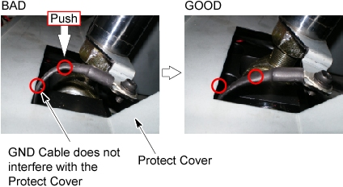

Operating Documentation
Direction 5193575-800, Rev# 5
Operating Documentation |
| CRASH HAZARD! | |
| THE TABLE MUST BE SUPPORTED USING THE SUPPORT TOOL AS DESCRIBED BELOW WHEN CHANGING THE HYDRAULIC CYLINDER. | |
Raise the Table to maximum height.
Perform this step if applicable:
Remove power from Table by turning off 120VAC, Axial Drive and HVDC switches on Service Switch Panel.
Remove the following Table covers:
Remove the Pump Upper Cover as follows:
Mark the position of pump upper cover on both sides for re-installation.
Disconnect the cable connectors of the tape switches and touch sensors.
Remove six (6) screws holding the both sides of the pump upper cover, and remove the pump upper cover.
Attach the Table Support Tool as follows:
Perform this step if applicable:
| CRASH HAZARD! | |
| THE TABLE IS VERY HEAVY AND CAN MOVE IF THE GLOBAL PET/CT TABLE TRANSPORTER IS NOT SECURED! | |
| The transporter must be secured from moving before attaching the table support tool. |
Perform this step if applicable:
The adjuster of the support tool A should be partially extended, about 3 cm, before supporting the Table.
Attach the support tool A to the left top frame, and turn the set (hexagon) screw to CCW to fix the support tool A.
Attach the other support tool A to the right top frame, and turn the set (hexagon) screw to CCW to fix the support tool A.
Attach the support tool B to the support tool A using 4 screws.
Power up the Table from the Service Switch Panel.
Extend the adjusters by turning them so that the adjusters touch the floor, and lower the Table onto the support.
Remove power from Table by turning off 120VAC, Axial Drive and HVDC switches on Service Switch Panel.
Remove the protect cover by unscrewing 2 screws.
Perform this step if applicable:
Cut any tie-wraps holding the valve cables and hoses to the Table frame.
Disconnect the valve cable connector.
Unscrew one screw, and remove the cylinder GND cable from the Table.
Remove the lower shaft as follows:
Unscrew a lock screw.
Draw out the lower shaft from the rod end.
Disengage the upper block R and upper block L from the U-column by unscrewing 6 support bolts.
Remove the Cylinder with hoses from the Table, and put it to the oil-pan.
Disconnect the high-pressure hose from the cylinder (a oil may spill out from the hose), and connect it to the new cylinder.
Disconnect the return hose from the cylinder (a oil may spill out from the hose), and connect it to the new cylinder.
Remove the upper shaft from the cylinder as follows:
Loosen 2 set screws on the stopper L, and remove the stopper L, upper block L and a ring from the upper shaft.
Draw out the upper shaft with the upper block R from the cylinder.
Perform re–tapping to screw holes of the upper blocks using the tapping tools provided in the Table cylinder replacement tool.
Insert the upper shaft (upper block R and the ring) cross the hole of the new cylinder.
Position the rod end of the new cylinder into place, and insert the lower shaft, then tighten the lock screw.
Connect the valve cable connectors.
Align the screw holes of the upper blocks and U-Column as follows:
Power up the Table from the Service Switch Panel.
Adjust the length of the cylinder using Table Up/Down switch.
Engage the upper blocks to the U-Column using the 6 bolts with Loctite (Torque: 55N.m).
Verify that the position of the cylinder is the following.
Connect new cylinder GND cable using one screw as shown in Illustration 11.
Raise the Table to its highest position, and verify that the upper blocks are securely installed.
Perform this step if applicable:
Verify that the cylinder GND cable does not interfere with the protect cover (see Illustration 21).
Illustration 21: Cylinder GND Cable and Protect Cover

Carefully remove the Table support tool.
Verify that all cabling and hosing are in the proper configuration and will not catch, then tie-wrap the cables and hoses in place.
Table pump lubrication:
Pry a lid up using a flat-head screw driver.
Pour approximately 100cc of the oil into the pump.
Power up the Table from the Gantry Service Switch.
Raise the Table as high as possible.
Turn off the Table from the Gantry Service Switch.
Check the level of the oil by using a stick such as tie-wrap, specification is shown in illustration below.
Secure any loose hoses with tie-wraps.
Raise and lower the Table repeatedly to verify that the hoses do not catch or pull excessively.
Turn off all 3 switches (Axial Drive, HVDC, 120VAC), and re-install the Table covers.